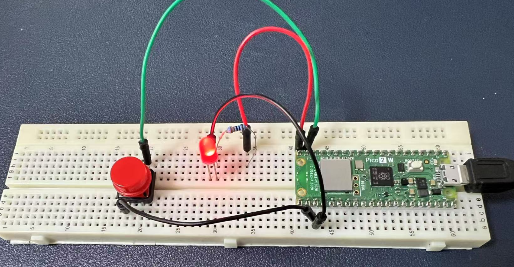

Project 2 Buttons
Button-Controlled LED Modes with Raspberry Pi Pico 2W
Here's an interesting experiment using the Raspberry Pi Pico 2W, a button, and an LED. The goal is to control different LED flashing modes using a button. Users can switch between three modes: Constant On, Blinking, and Fading.
Objectives
- Use a button to switch between different LED flashing modes.
- The LED will have three modes:
- Mode 1: Constant On
- Mode 2: Blinking (Fast On/Off)
- Mode 3: Fading (Gradually Brightening and Dimming)
- Each button press will switch to the next mode.
Hardware Requirements
- 1 x Raspberry Pi Pico 2W
- 1 x button with button cap
- 1 x LED indicator
- 1 x 220 ohm Resistor
- 1 x Jumper wires
- 1 x Breadboard
- 1 x MicroUSB programming cable
Wiring Diagram
LED:
- Connect the LED's positive (anode) pin to a GPIO pin on the Pico (e.g., GPIO 15).
- Connect the LED's negative (cathode) pin to GND.
Button:
- Connect one end of the button to a GPIO pin (e.g., GPIO 14).
- Connect the other end of the button to GND.

以下是Markdown格式的代码和代码说明部分：
Demo Code
# Import necessary modules
import machine
import utime
# Initialize the LED and button
led_pin = machine.Pin(15, machine.Pin.OUT) # LED connected to GPIO 15
button_pin = machine.Pin(14, machine.Pin.IN, machine.Pin.PULL_UP) # Button connected to GPIO 14, with internal pull-up resistor
# Define three modes for the LED
def mode_constant():
print("Mode 1: LED Constant On")
led_pin.value(1) # Turn the LED on constantly
utime.sleep(0.1) # Brief delay to avoid overloading the CPU
def mode_blink():
print("Mode 2: LED Blinking")
led_pin.toggle() # Toggle the LED state (on/off)
utime.sleep(0.5) # Blink interval
def mode_fade():
print("Mode 3: LED Fading")
pwm = machine.PWM(led_pin) # Use PWM to control LED brightness
pwm.freq(1000) # Set PWM frequency
for duty in range(0, 65535, 1000): # Brighten from dim to bright
pwm.duty_u16(duty)
utime.sleep(0.01)
for duty in range(65535, 0, -1000): # Dim from bright to dim
pwm.duty_u16(duty)
utime.sleep(0.01)
pwm.deinit() # Stop PWM
utime.sleep(0.1)
led_pin.value(0) # Ensure LED is off after PWM
# Main program
current_mode = 0 # Current mode
modes = [mode_constant, mode_blink, mode_fade] # List of modes
last_button_state = button_pin.value() # Previous button state
print("Press the button to switch LED modes!")
print(last_button_state)
while True:
button_state = button_pin.value() # Get the current button state
print(button_state)
if button_state == 0 and last_button_state == 1: # Detect button press (high to low)
current_mode = (current_mode + 1) % len(modes) # Switch to the next mode
utime.sleep(0.2) # Debounce delay
print(f"Switched to Mode {current_mode + 1}")
last_button_state = button_state # Update button state
# Call the function for the current mode
modes[current_mode]()
Code Explanations
Hardware Initialization
- The LED and button are initialized using
machine.Pin. - The button is connected to GPIO 14 with an internal pull-up resistor, making it high by default.
LED Modes
mode_constant: The LED stays on constantly.mode_blink: The LED blinks rapidly.mode_fade: The LED fades in and out using PWM to adjust brightness.
Button Detection and Mode Switching
- The button state is checked using
button_pin.value(). - When a button press is detected (high to low), the mode switches to the next one in the list.
- A delay (
utime.sleep(0.2)) is used to debounce the button.
Main Loop
- The loop continuously checks the button state and calls the function corresponding to the current mode.
Experiment Outcome
- Mode 1: The LED stays on constantly.
- Mode 2: The LED blinks at a rate of about twice per second.
- Mode 3: The LED gradually brightens and dims in a loop.
- Each button press switches to the next mode, cycling back to the first mode after the last one.